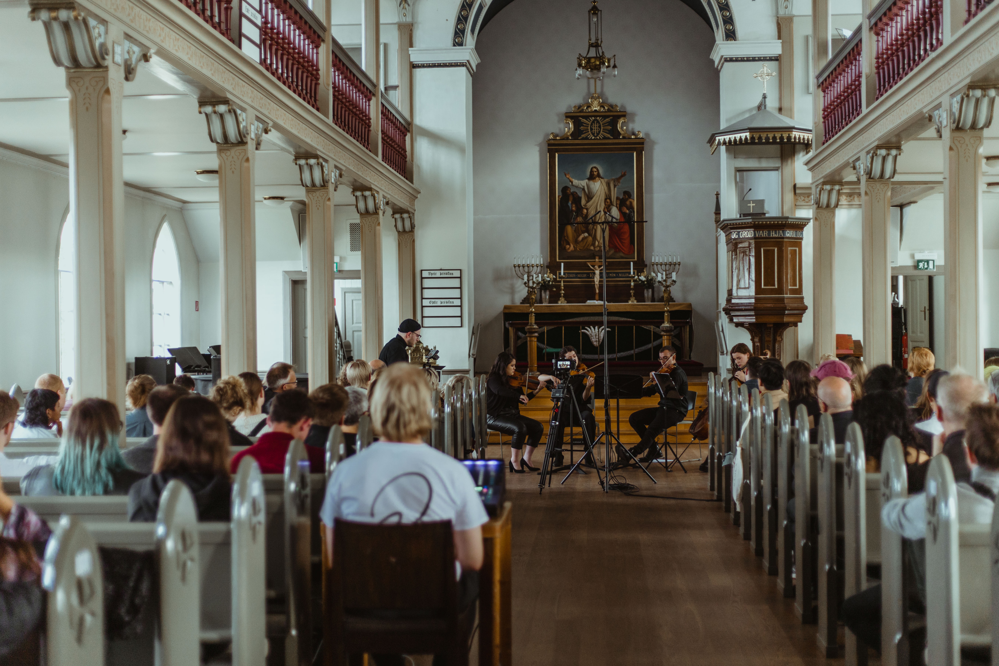

My piece for string quartet, Everred was selected for the 2022 edition of UNM (Ung Nordisk Musik) in Reykjavík. It was performed in Fríkirkjan by an ensemble specifically assembled for this occasion.
Ung Nordisk Musik Reykjavík 2022: co·structing
Photographer: Christina Raytsiz
www.ungnordiskmusik.is
The full score is available at Svensk Musik. Listen to an excerpt from the rehearsals:
Program note. Read more.
In Hettan [The Heat], that I wrote for Stockholm Saxophone Quartet, I explore breathing, air sounds and other soft qualities of the instruments as well as rhythmical
discord and ways to notate improvisation that meets certain conditions.
Listen to the premiere performance:
I played a live concert on May 21, 2021 at Fylkingen with material that I have developed during the last few months. I played with a midi controller and I created all sounds within
the SuperCollider framework.
Listen to the full performance:
Special thanks to Maria W Horn and David Granström for all their help and support, technical and otherwise.
Inert Mass is an algorithmic piece of music that streamed for the entire month of January 2021 (and then never again) on Chronopolis / Cashmere Radio. Read more here.

Artwork by Mikaela Wei.